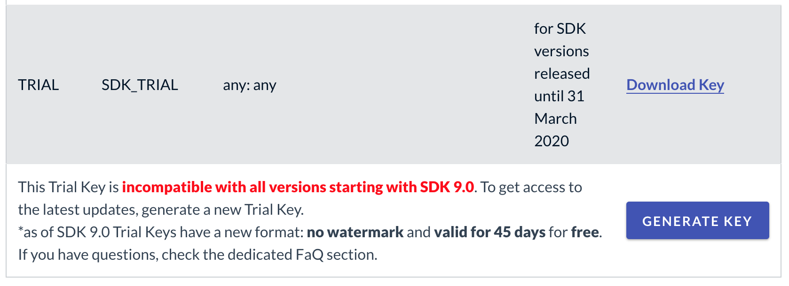

License Key
The Wikitude SDK requires a valid license key to be able to run properly. An empty or missing license key will block the augmented reality view from showing any meaningful content. You will see a watermark across the screen with the words License Key Missing.
How to obtain a free trial license
When downloading the Wikitude SDK you will be forwarded to the license generation page, where you can generate a trial license key for your project.

Copy the key into your app, which will unlock the trial mode of the Wikitude SDK. The trial mode of the Wikitude SDK contains the full feature set of the Wikitude SDK for a limited amount of time and will show the Wikitude logo in the corner of the camera view. A commercial key will remove this logo and show a blank camera view.
Each trial license key is valid for every application ID on every operating system. You can use the same trial license key in multiple apps.
Where should I enter the license key
To use the Wikitude Android SDK you need to provide a valid license key to the onCreate lifecycle method of the Wikitude SDK object.
Create a NativeStartupConfiguration object and pass it the license as a string and then call the onCreate(getApplicationContext(), startupConfiguration) method.
NativeStartupConfiguration startupConfiguration = new NativeStartupConfiguration();
startupConfiguration.setLicenseKey(WikitudeSDKConstants.WIKITUDE_SDK_KEY);
wikitudeSDK.onCreate(getApplicationContext(), startupConfiguration);